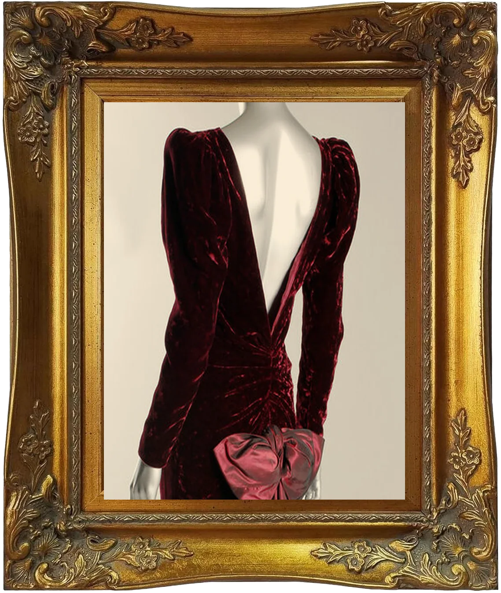
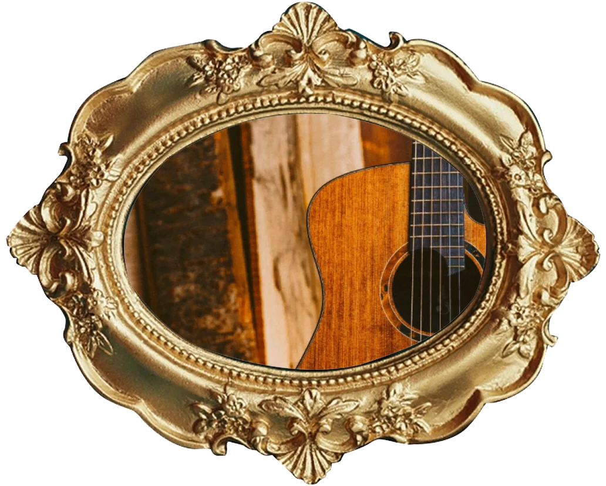
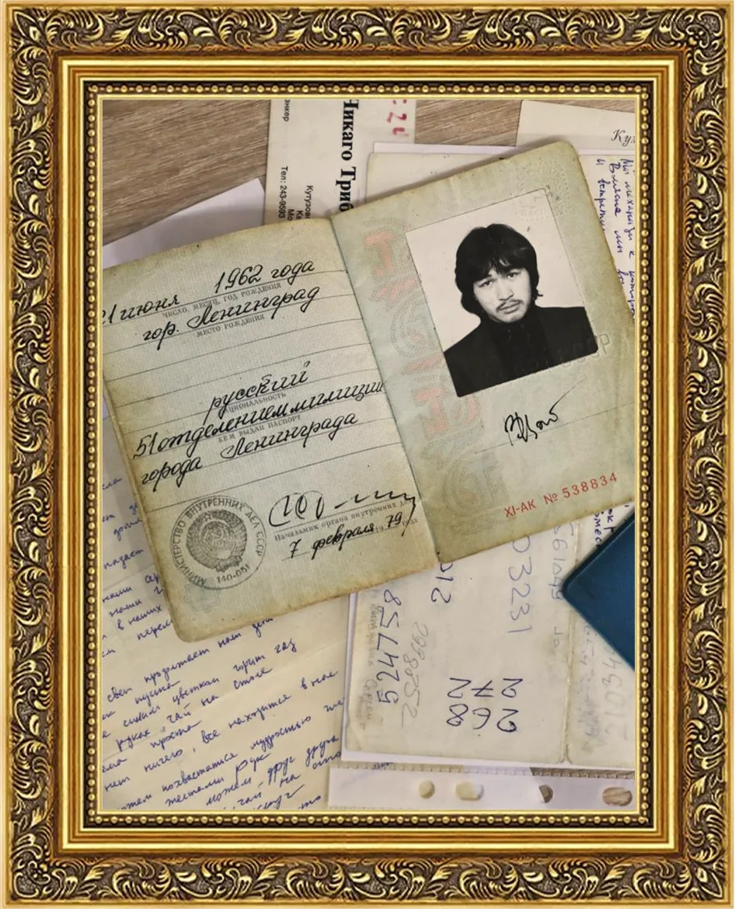

Вы бы купили свитер кумира?
Почему так хочется иметь вещь селебрити и сколько разумно за неё платить

Признайтесь: вам хоть раз хотелось вещь человека, которым вы восхищаетесь? Не футболку с логотипом, а настоящую. Шарф, в котором он выходил на сцену. Кружку, из которой любимая ведущая пила кофе перед эфиром. Блокнот, где писатель набрасывал первые строчки.
С вами всё в порядке. Психологи давно изучают это желание и знают, откуда оно берётся. Сейчас проверим на вас. Шесть вопросов, правильных ответов нет. После каждого расскажем, как на тот же вопрос отвечали участники настоящих исследований.
38%
Если хотелось, вы не одни. Этим летом VK спросил жителей 17 городов, купили бы они вещь известного человека. Столько ответили «да» или «скорее да».
19%
И всё же признаваться в этом неловко: кажется, что это по-детски. Столько россиян хоть раз смущались, покупая обычный товар с лицом знаменитости на упаковке.
Шкала следа
Из всех экспериментов следует простой вывод: чем дольше человек жил с вещью, тем больше в ней следа. Вот как это выглядит на практике и чем каждую ступень можно подтвердить.
-
Ступень 1
Подписал
за секунды- Например
- Автограф на встрече с поклонниками
- Чем подтвердить
- Фото или видео момента, когда ставят подпись
-
Ступень 2
Подержал
в руках- Например
- Подарок со съёмок, реквизит
- Чем подтвердить
- Фото владельца с этой вещью и рассказ, откуда она
-
Ступень 3
Пользовался
иногда- Например
- Сценический костюм, вещь с одного события
- Чем подтвердить
- Фото или видео с события, где видна именно эта вещь
-
Ступень 4
Пользовался
постоянно- Например
- Любимая куртка, кружка на рабочем столе
- Чем подтвердить
- Несколько фото в разное время и история от первого лица
-
Ступень 5
Прожил
с ней годы- Например
- Вещь, связанная с важным периодом жизни
- Чем подтвердить
- Рассказ владельца, видео передачи, совпадающие детали: затяжки, пятна, потёртости

Как важны детали
Гитара, с которой Боб Дилан вышел на сцену в 1965 году, почти полвека хранилась в чужой семье. Чтобы убедиться, что это она, эксперты сравнили рисунок древесины со старыми фотографиями. У каждой гитары он свой.
Цена должна расти вместе со ступенью,
а историю вещи лучше всех расскажет сам владелец

Ценность вещи в следе человека
И здесь начинаются сложности. В 2018 году паспорт Виктора Цоя продали на аукционе за 9 миллионов рублей, хотя торги начинались с 2,5 миллиона. Подлинность документа проверили по запросу в МВД. И всё равно отец музыканта назвал эту историю «чистым блефом».
Когда историю пересказывают другие, сомнения остаются даже после экспертизы. Надёжнее всего, когда вещь подтверждает сам владелец: рассказывает, как с ней жил, и передаёт её из рук в руки на камеру.
А свитер мы стирать не будем.
Источники
Исследования
- Свитер знаменитости и стерилизация, Newman, Diesendruck, Bloom, 2011: ScienceDaily · полный текст
- Перепроверка исследования 2011 года: Peer Community in Registered Reports
- Дети и «копировальная машина», Hood, Bloom, 2008: Бристольский университет · публикация
- Ранние номера тиража и «Белый альбом», Smith, Newman, Dhar: публикация · Yale School of Management
Опросы
- 38% готовы купить вещь известного человека, опрос VK: New Retail
- 19% было неловко купить товар со знаменитостью, опрос «Анкетолога»: AdIndex
Истории
- Кардиган Курта Кобейна: The Fader · AFP через TBS News
- Базары в Ялте и воспоминания Анны Вырубовой: Romanov Empire
- Гитара Боба Дилана и рисунок древесины: Hollywood Reporter
- Машинные подписи: Cardboard Connection
- Паспорт Виктора Цоя: «Комсомольская правда» · «Московский комсомолец»